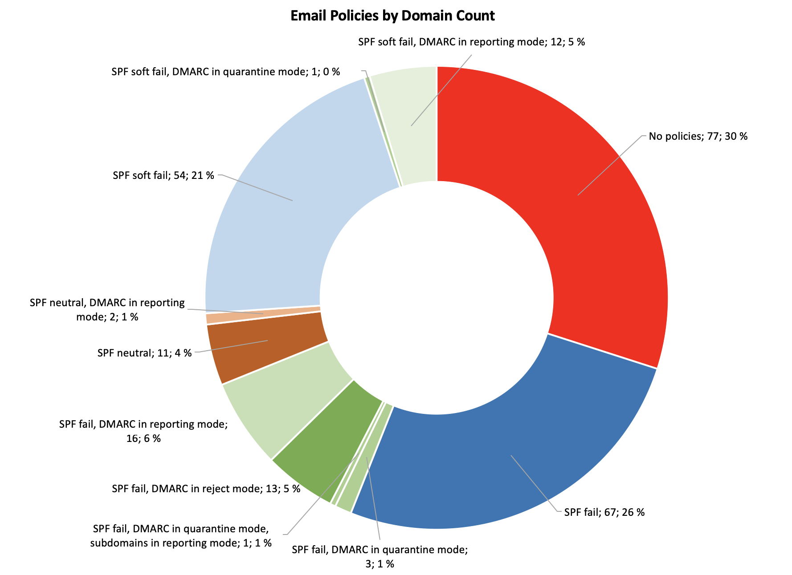

Ovatko Suomalaiset yritykset edelläkäviöitä taistelussa spoofingia vastaan?
Vietin itsenäisyyspäivää seuraavan perjantain vapaalla, eikä minulla ilmeisesti ollut muuta tekemistä kuin opiskella SPF:ää, DKIM:ää ja DMARC:ia. Nämä ovat sähköpostin lähettäjien keinoja tarjota viestien autentikointia näiden lähettämille viesteille, jotta roskapostisuodattimet voivat havaita väärennösyritykset. SPF ja DKIM ovat hieman vanhempia ja vakiintuneempia,DMARC:in ollessa uudempi tapa julkaista domainin politiikka pohjautuen kahteen edelliseen. Yhdessä nämä menetelmät tarjoavat yrityksille keinoja suojata brändejään uhkatoimijoiden väärentämiltä sähköposteilta.
Löysin mielenkiintoisen tutkimusartikkelin, jonka ovat kirjoittaneet Hang Hu ja Gang Wang Virginia Techistä, otsikolla End-to-End Measurements of Email Spoofing Attacks. Tutkijat totesivat, että SPF:n käyttöönottoaste 1000 suosituimmalla sivustolla Alexa-listalla oli vuoden 2018 alussa noin 73%, ja 31 suuresta 35 sähköpostipalvelun tarjoajasta, kuten gmail.com ja hotmail.com, käyttävät aktiivisesti SPF:ää roskapostin suodatuksessa. DMARC:in käyttöaste oli 41%, ja 16 35 sähköpostipalvelusta käytti sitä roskapostin suodatuksessa. Heidän tutkimuksensa osoittaa myös, että väärennettyjen sähköpostien määrä, jotka saavuttivat käyttäjien postilaatikot heidän testeissään, väheni merkittävästi, kun domainilla oli DMARC “p=reject” -käytäntö verrattuna domainiin, jolla oli käytössä vain SPF/DKIM, ja domainit, joilla ei ollut SPF, DKIM tai DMARC -autentikointia, väärennetyt sähköpostit saavuttivat lähes aina käyttäjien postilaatikot.
Tämä sai minut miettimään, mikä käyttöönottoaste on suomalaisissa yrityksissä, joten päätin tehdä hieman tutkimusta. Keräsin listan Helsingin pörssiin listatuista yrityksistä Wikipediasta, lisäsin muutamia, joihin minulla oli henkilökohtainen kiinnostus, ja ryhdyin luomaan luetteloa näiden yritysten käyttämistä domain-nimistä oletuksella, että yritykset käyttäisivät joko .fi tai .com päätason domainia. Pian minulla olikin tarkistettavana vahvistettu lista 134 yrityksestä, joilla oli yhteensä 257 domainia. En etsinyt kaikkia mahdollisia olemassa olevia domain-nimiä kultakin yritykseltä, vaan lisäsin vain ne, jotka olivat ilmeisiä selaimen uudelleenohjausten perusteella ja lisäsin enintään neljä lisädomainia, kun ne olivat helposti saatavilla yrityksen verkkosivuston etusivulta. Kaikkien domain-nimien pois jättäminen vääristää dataa hieman, mutta uskon sen olevan riittävä johtopäätösten tekemiseen. Seuraavaksi kirjoitin pienen skriptin, joka kysyy julkisia SPF- ja DMARC-tietueita näille domain-nimille ja keräsin tiedot excel-taulukkoon julkaistujen politiikoiden analysoimiseksi. Kaikki tiedot kerättiin 9. joulukuuta 2018.
SPF-tietue ilmoittaa yleensä yhden kolmesta eri politiikasta; FAIL hylkää viestin, jos se ei läpäise SPF-tarkistusta, SOFTFAIL pyytää vastaanottajaa tekemään lisätarkistuksia, jos viesti ei läpäise SPF-tarkistusta, ja NEUTRAL merkitsee ei julkaistua politiikkaa.
DMARC-politiikka voi olla “p=none”, jota käytetään seurantaan, kun lähettävä domain ei ilmoita politiikkaa, mutta haluaa saada DMARC-raportit vastaanottajilta, “p=quarantine” pyytää vastaanottajaa merkitsemään viestin, joka ei läpäise DMARC:n määrittelemää autentikointia “SPAM” -merkinnällä ja “p=reject” pyytää vastaanottajaa hylkäämään viestin, joka ei läpäise autentikointia.
Alla oleva ympyräkaavio havainnollistaa SPF:n ja DMARC:n käyttöä näissä 257 domainissa. Punainen väri sisältää domainit, joilla ei ole julkaistuja SPF tai DMARC-tietueita tai joilla on “NEUTRAL” SPF-politiikka. Keltainen väri sisältää domainit, joilla on SPF FAIL tai SOFT FAIL -politiikka, mutta ei DMARC-tietueita, vaaleanvihreä väri sisältää domainit, joilla on SPF-tietue ja DMARC-seurantapolitiikka, joka mahdollistaa ylläpitäjien saada yhteenvetoraportteja DMARC-protokollan kautta, ja vihreä väri sisältää domainit, jotka ovat määritelleet “p=quarantine” tai “p=reject” -politiikat.
Tämä viittaa siihen, että:
- 34% tarkistetuista domain-nimistä ei ole autentikointia käytössä, jolla rajoittaa väärennettyjen sähköpostien lähetystä domainin nimissä,
- 47% luottaa ainoastaan SPF FAIL tai SOFT FAIL -politiikkoihin,
- 12% on DMARC:n käyttöönotto menossa ja ne ovat asettaneet DMARC-seurannan “p=none” -politiikalla,
- 7% on julkaissut “p=quarantine” tai “p=reject” -politiikan.
Kiinnostuneille minulla on myös yksityiskohtaisempi ympyräkaavio, jossa on eritelty käytössä olevat SPF- ja DMARC-tilat.

Yllä olevat kaaviot sisältävät kaikki domainit yhtenä datamassana, mutta ne eivät liitä dataa tiettyihin yrityksiin. Jokaisella yrityksellä on enintään viisi domainia listassa ja jokaisella domainilla on omat domain-kohtaiset SPF ja DMARC-politiikkansa. Alla olen jakanut yritykset kuuteen ryhmään ja nostan muutamia yrityksiä, joiden asetukset ovat erityisen hyvällä mallilla mutta en julkaise koko listaa. Tämä on kaikki helposti saatavilla olevaa julkista tietoa, mutta tehköön script-kiddiet hieman töitä, jos he haluavat löytää helpot phishing-kohteet.
DMARC käytössä kaikilla tarkistetuilla domaineilla
8% yrityksistä on ottanut käyttöön DMARC:n kaikissa tarkistetuissa domaineissaan. Näihin kuuluvat esimerkiksi Danske Bank, Handelsbanken, Nordea, Outokumpu, Wärtsilä ja YIT.
Nämä yritykset ovat selvästi edelläkävijöitä taistelussaan roskapostia vastaan ja heillä on kattavat järjestelyt kaikkien domainiensa suojelemiseksi huijausviesteiltä. Pidin erityisesti siitä, miten Danske Bank, Outokumpu ja Wärtsilä ovat järjestäneet DMARC-tietueensa luomalla omat alidomainit DMARC:lle ja sitten tekemällä domainkohtaiset _dmarc CNAME-tietueet ja osoittamalla ne yhteen yhteiseen DMARC-tietueeseen. Erittäin tyylikäs ja helppo ylläpitää!
Danske Bank oli myös ainoa listassa, jolla kaikki tarkistetut verkkotunnukset olivat “p=reject; aspf=s; adkim=s” -tilassa, mikä tarkoittaa tiukkaa SPF- ja DKIM-käytäntöä, jossa kaikki viestit, jotka eivät ole linjassa, hylätään tiukasti. Hattua nostan!
DMARC käytössä, mutta myös domaineja, joissa on vain SPF käytössä
7% osuudella näillä yrityksillä näyttää olevan DMARC käytössä päädomainilla, jota he käyttävät sähköpostitoimintaansa. Se on yleensä raportointitilassa, mutta muuten yritys nojaa SPF-käytäntöihin muissa verkkotunnuksissaan. Nämä yritykset selvästi testaavat DMARC:ia ja suunnittelevat sen käyttöönottoa.
DMARC käytössä, mutta myös verkkotunnuksia ilman käytäntöjä
11% osuudella näillä yrityksillä on DMARC asetettuna pääverkkotunnukselleen, mutta ne näyttävät unohtaneen suojata loput verkkotunnuksistaan. Joskus yritys käyttää pääasiassa yritys.com-osoitettaan, mutta ei suojaa yritys.fi-osoitetta, mikä tekee mahdolliseksi helposti väärentää @yritys.fi-osoite. Tähän kategoriaan sisältyy suuria kansainvälisiä teknologiayrityksiä.
Vain SPF käytössä kaikissa tarkistetuissa verkkotunnuksissa
37% yrityksistä on ottanut käyttöön SPF-tietueet kaikissa tarkistetuissa verkkotunnuksissaan, mutta ei näytä vielä aloittaneen DMARC:n testaamista. Yllättäen tähän luetteloon kuuluu myös yksi tai kaksi tietoturva-alan yritystä!
SPF käytössä, mutta myös verkkotunnuksia ilman käytäntöjä
20% yrityksistä nojaa myös SPF-tietueisiin, mutta heillä on myös verkkotunnuksia, ilman minkäänlaisia asetuksia. Todennäköisesti asetukset on unohdettu laittaa kuntoon domaineille, joita ei käytetä sähköpostin lähettämiseen tai vastaanottamiseen, mikä tekee näistä verkkotunnuksista haavoittuvia väärennöksille. Tähän luetteloon kuuluu myös pari yllättävää IT-yritystä.
Ei DMARC:ia tai SPF:ää käytössä missään tarkistetuissa verkkotunnuksissa
17% yrityksistä ei ole asettanut SPF- tai DMARC-tietueita millekään tarkistetuista verkkotunnuksistaan, tai oli asettanut SPF-tietueet NEUTRAL-tilaan, mikä on käytännössä ilmoitus käytännön puuttumisesta. Tähän luetteloon kuuluu joitakin suuria kansainvälisiä yrityksiä, joiden odottaisin olevan tietoisia phishing- ja spoofing-ongelmista, joten SPF- tai DMARC-tietueiden täydellinen puuttuminen on minusta erikoista.
Mitä tästä jäi käteen?
Työtä on paljon!
Yhdenmukaisuuden tarve on pääasiallinen johtopäätös. 52% yrityksistä käyttää jonkinlaista sähköpostin tunnistusta kaikilla verkkotunnuksillaan, joista vain 8% on todella edelläkävijöitä, jotka ovat ottaneet DMARC:n käyttöön yhdenmukaisesti muussa kuin raportointitilassa kaikilla verkkotunnuksillaan, toinen 7% on hyvää vauhtia menossa samaan suuntaan, ja loput 37% eivät ole vielä aloittaneet DMARC:n käyttöönottoa. 31% tarvitsee inventaarion domaineistaan ja projektin asetusten saattamiseksi yhdenmukaisiksi, sillä heillä on DMARC ja/tai SPF asetettuna päädomainilla, mutta ei muilla, ja 17% täytyy alkaa pikaisesti tutkia aihetta, sillä heillä ei ole minkäänlaisia politiikoita edes päädomainillaan ja he luottavat yksin vastaanottavien järjestelmien arvailuihin väärennösten tunnistamisessa.
Toinen asia, mitä jäi käteen, on tyylikäs tapa, jota Danske Bank, Outokumpu ja Wärtsilä käyttävät, yhdistää DMARC-käytännöt yhteen tietueeseen ja osoittaa siihen CNAME-tietueilla.
Oma vetoomukseni on, että teemme työtä saadaksemme nämä ympyrädiagrammit täysin vihreiksi. Laitan nämä opit korvan taakse asettaessani autentikointia omille sähköposteilleni, mutta ymmärrän, että DMARC:n käyttöönotto laajassa infrastruktuurissa voi olla haastava projekti. Kuitenkin DMARC-raportointi tarjoaa loistavan työkalun järjestelmän tilan seurantaan ja mahdollistaa lähes välittömän palautteen muutosten vaikutuksista, mahdollistaen tiukkojen “p=reject” -käytäntöjen käyttöönoton. Tämä lopullinen tavoite varmasti tekee asianmukaisten domainien väärentämisen vaikeammaksi hyökkääjille, kun nämä tekniikat tulevat yleisempään käyttöön, ja auttavat yrityksiä suojaamaan brändinsä väärentämistä väärentämiseltä.